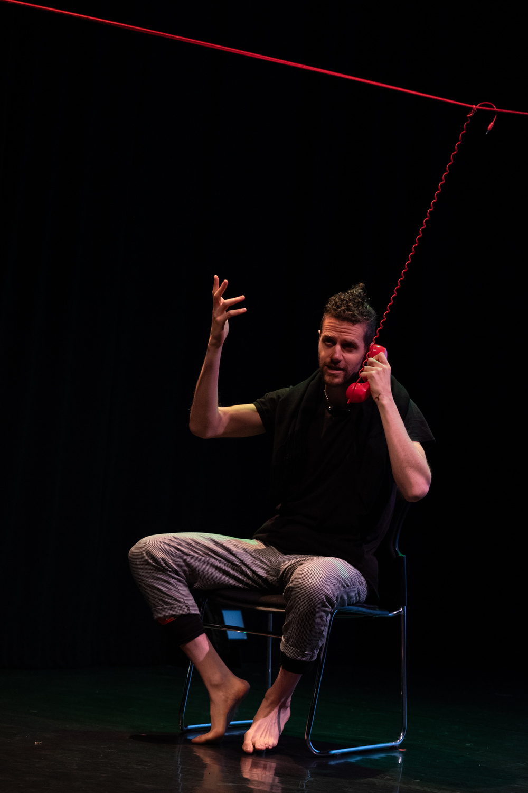

Borderline


Borderline is a confessional, theatrical elegy for the border. A red line appears in "New Beirut," floating mid-air, as characters cross and recross it: a WhatsApp uncle, a bodybuilding refugee, a mother on loop. Through HTML poetry, embodied ritual, and family testimony, the piece explores how migrants shrink and expand to fit the forms they're handed - until they begin to resemble borders themselves.